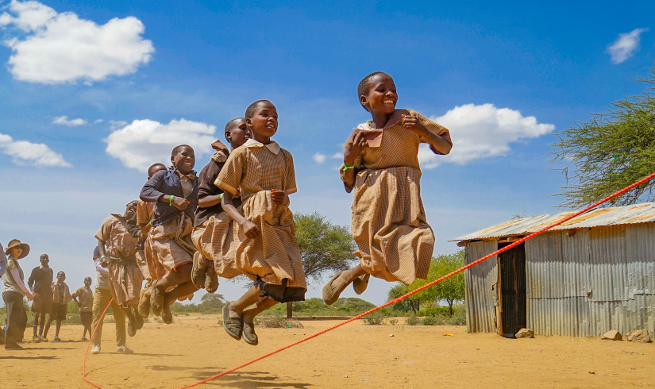

2022 walking for miracle
on the road
"On The Road"
워킹포 미라클 시즌 3
'walking for miracle on the road'는
각자 자신의 길 위에서 이루어지는 아웃리치입니다.
올 여름 각자 자신의 삶의 자리에서
walking for miracle을 시작합시다.
가족과 함께 떠나도 좋고,
친구들과 함께 길을 나서도 좋습니다.
어떤 사람은 휴가지에서,
또 어떤 분들은 늘 걷는 동네에서,
그 중에는 케냐로 가는 분들도 있을 것이고,
필리핀으로 떠나는 사람들도 있을 것입니다.
어디가 되었던 올 여름, 떠나십시오.
걷고, 기도하고, 복음을 전합시다.
walking for miracle
on the road를 통해서
하나님이 일하실 것입니다.
‘양식과 학용품 그리고 운동화’
올해는 전세계적으로 물가가
급상승하고 있습니다.
전쟁과 에너지 문제, 그리고 가뭄으로
우리가 섬기는 케냐와 레바논, 필리핀도
어느 때보다도 어려운 고비를 겪고 있습니다.
그들에게 우리가 걷는 걸음수만큼
양식을 보낼 것입니다.
우리들 뿐만 아니라 케냐에서도
레바논에서도 필리핀에서도
서로를 위해 함께 걷고 함께 기도할 것입니다.
그리고 여러분들이 신던 운동화를
깨끗히 세탁해서 보내주세요.
케냐에 맨발로 걷는 아이들에게는
운동화도 보내줄 것입니다.
코로나로 멈춘 '꿈꾸는 운동화'가
다시 시작됩니다.

어떻게 재정을 모으나요?
시리아, 케냐, 필리핀 어린이들이
재정을 모으지는 않습니다.
선교지에 있는 어린이들은
걷기만 하고
보내는 재정은 모두
한국 빛의교회가 준비할 거에요.
우리는(빛의교회 식구들)
자신이 걸은 걸음수만큼
헌금해주시면 됩니다.
우리 중에서도
헌금을 하지 않고
걷고 기도만 해주셔도 좋습니다.
부족한 금액은
빛의교회가 준비해서
보내도록 하겠습니다.
대신 가능한 빛의교회 식구들은
자신들이 걸은 걸음 수만큼
헌금을 보내주시면
여러분들이 헌금해 주신 것에
교회가 2배로 더해서
책상과 함께
각 나라에
양식을 보내주도록 하겠습니다.
[헌금하는 방법]
입금계좌 : 신한은행 140-010-317409
빛의교회 (선교)
입금자명 : 홍길동w4m